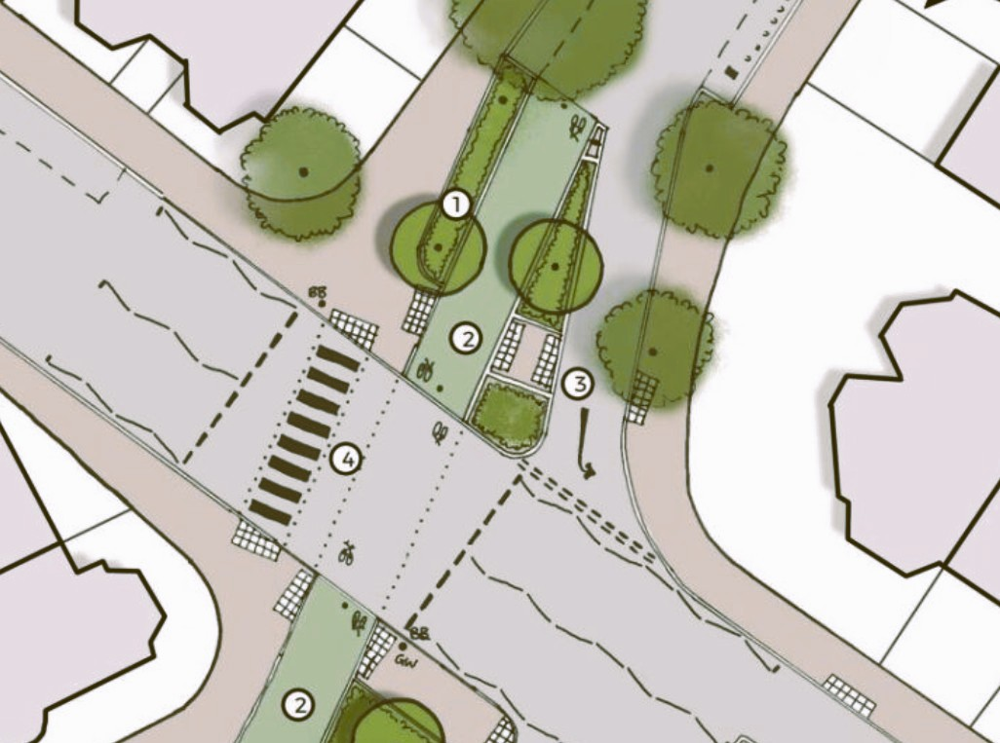
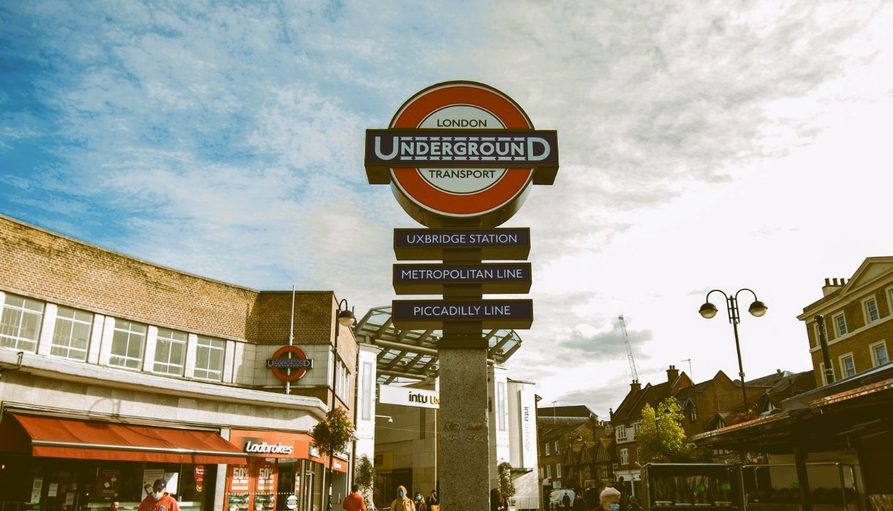
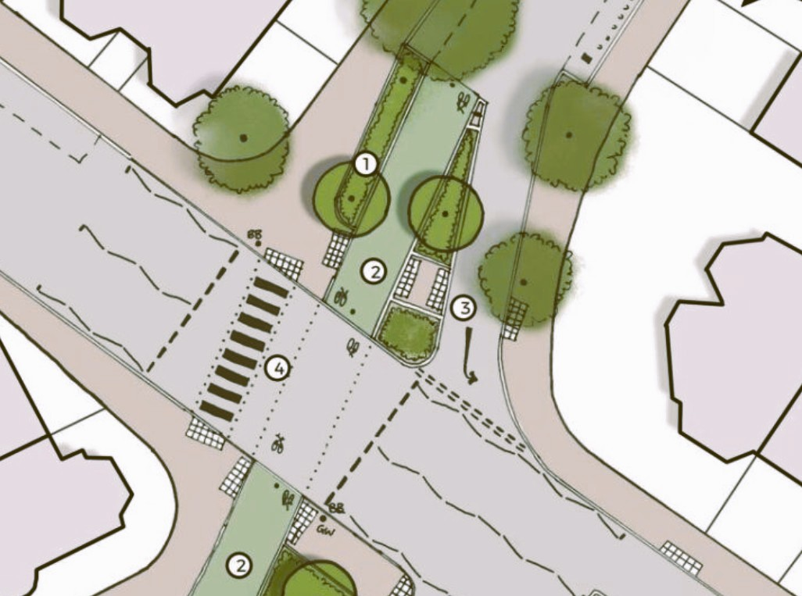
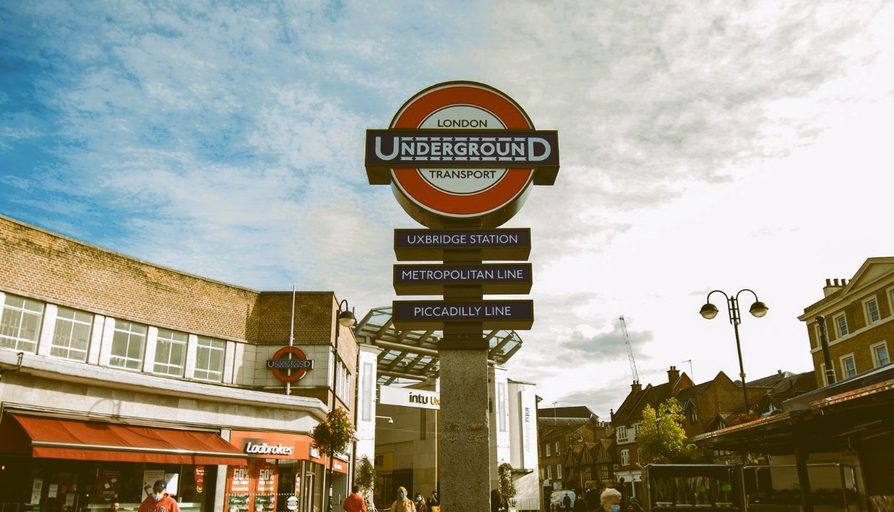
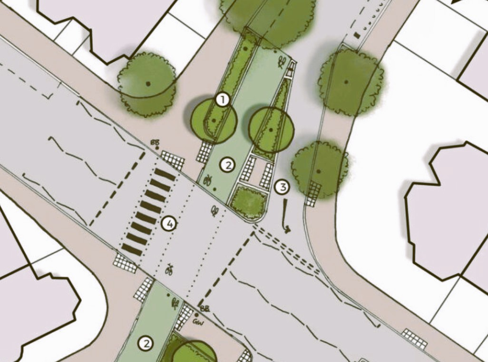
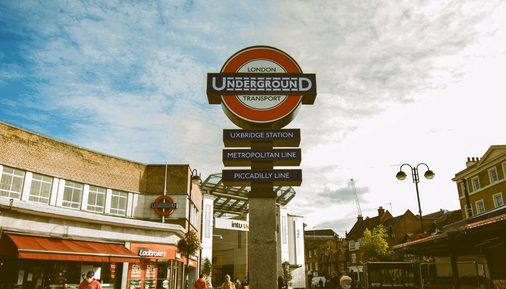

GIS as a tool to inform more sustainable, equitable active travel infrastrcture. How can data-driven insights help government agencies reach their policy aspirations?


The benefits of cycling are well established. Both on the individual; Disease risk reduction and higher life expectancy - and on society at large; reduced traffic fatilites and lower ambient air pollution. Many European cities use segregated cycleway infrastrcuture to improve the perception of safety around cycling, the single biggest impedence to uptake.
While London has made strides in creating a less hostile environment for cyclists, investing heavily in new infrastructure - studies mark a divide between those that choose to cycle and those that do not. Demographic differences in tendency to cycle reflect an environment where cycleway planning is often built upon existing usage patterns.
How then, does the consideration of a range of needs and desires in the cycleway planning process inform network planning? And what role can Geospatial data analysis be used to help create an active travel environment that best reflects the needs of London's diverse population, achieving the cities aspiration of becoming a leading cycle city.
Understanding where cycleway investment is most prudent neccesitates an understanding of how and why different people cycle, and the barriers they face. While not all encompasing, Multi-Criteria Evaluation (MCE) provides a framework to consider the role of different factors
MCE weighs different input criteria on the basis of importance assigns areas a total value. In the case of cycleway planning, looking for locations which best satisify the demands of a diverse potential userbase, informs the form of an inclusive network.
An adjusted version of the Bicycle Levels of Service (BLoS)which is used by planners to assess the quality of existing infrastructure was developed which reflects the needs of user groups which are historically underepresented as cyclists and may have different route priorities. For example older adults may priorities routes with fewer road crossings, and lower maximum gradients whereas female cyclists may prioritise lighting and visibility.